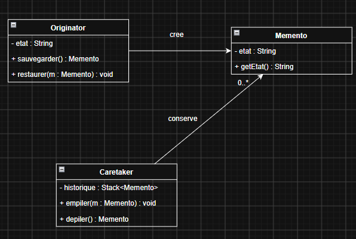
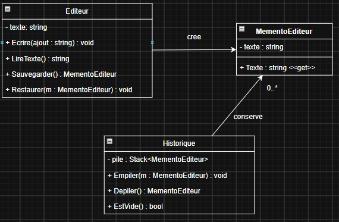

Memento¶
Personne autrice : Ismail Hentati, Thomas Bergeron
Fonctionnement du patron¶
Le but de Mémento est de sauvegarder un état afin de pouvoir le réétablir sans dévoiler les détails de son implémentation.
Le fonctionnement du patron mémento est le suivant:
Premièrement, la classe Originator enregistre l'état de ce que l'on veut restaurer plus tard. Elle comporte deux méthodes qui permettent de sauvegarder l'état et de restaurer celui-ci. Ensuite, la classe Memento est un objet qui contient les valeurs que l'ont veut enregister. Sa valeur lui est assignée à sa création et ne peut pas être modifiée. On doit toutefois pouvoir lire la valeur de son état afin de la restaurer plus tard. Finalement, la classe Caretaker s'occupe de l'historique des Mémentos. En effet, cette classe les retient dans une pile, ce qui facilite la gestion de l'historique des différents états. Une méthode sert à ajouter un Mémento à la pile et une autre, à dépiler le dernier Mémento ajouté et le retourner.
Les concepts de la programmation orientée objet mobilisés :
- La modularité
- L'encapsulation

Diagramme UML de la structure du patron
Avantages et désavantages du patron¶
Avantages
- Enregistre l'état d'un objet en respectant l'encapsulation
- Simplifie le code du Originator, car c'est le Caretaker qui s'occupe de la gestion de l'historique
- Structure simple : trois classes
Désavantages
- Peut utiliser beaucoup de mémoire RAM si l'utilisateur enregistre beaucoup d’états
- Les langages tels que PHP, Python et JavaScript ne peuvent pas empêcher les états sauvegardés dans les Mémentos d'être modifiés
Quand utiliser ce patron¶
Le patron Mémento est utile chaque fois qu'un objet doit pouvoir revenir à un état précédent. Les situations typiques sont les suivantes :
- Fonction d'annulation (undo) dans un éditeur de texte, un logiciel de dessin ou un tableur
- Points de sauvegarde dans un jeu vidéo, où l'on conserve la position, la vie et l'inventaire du joueur
- Transactions annulables, pour revenir à l'état initial lorsqu'une opération échoue
- Formulaires à plusieurs étapes, pour conserver les champs déjà remplis et permettre un retour en arrière
Il est préférable de l'éviter lorsque l'état à sauvegarder est volumineux et change très souvent, car chaque sauvegarde duplique l'état complet en mémoire
Exemple d'utilisation¶

Diagramme UML de l'éditeur de texte avec Memento
Un éditeur de texte minimaliste permet d'écrire du texte et d'annuler les modifications une par une. Avant chaque ajout de texte, l'état courant est sauvegardé dans un historique. L'utilisateur peut ensuite remonter dans le temps jusqu'à l'état initial.
Originator: Editeur
Memento: MementoEditeur
Caretaker: Historique
Code C# de l'exemple (4 fichiers) :
MementoEditeur.cs(Memento)
namespace MementoDemo
{
/// <summary>
/// Memento: capsule qui contient l'état sauvegardé
/// </summary>
public class MementoEditeur
{
/// <summary>
/// Le texte sauvegardé (lecture seule)
/// </summary>
public string Texte { get; private set; }
/// <summary>
/// Crée un memento avec le texte donné
/// </summary>
public MementoEditeur(string texte)
{
Texte = texte;
}
}
}
Editeur.cs (Originator)
namespace MementoDemo
{
/// <summary>
/// Originator: l'objet dont on sauvegarde l'état
/// </summary>
public class Editeur
{
private string texte = "";
/// <summary>
/// Ajoute du texte à la fin du texte actuel
/// </summary>
public void Ecrire(string ajout)
{
texte = texte + ajout;
}
/// <summary>
/// Retourne le texte actuel
/// </summary>
public string LireTexte()
{
return texte;
}
/// <summary>
/// Crée un memento avec l'état actuel
/// </summary>
public MementoEditeur Sauvegarder()
{
return new MementoEditeur(texte);
}
/// <summary>
/// Remet le texte à l'état du memento
/// </summary>
public void Restaurer(MementoEditeur memento)
{
if (memento == null)
{
return;
}
texte = memento.Texte;
}
}
}
Historique.cs(Caretaker)
namespace MementoDemo
{
/// <summary>
/// Caretaker: garde les mementos dans une pile
/// </summary>
public class Historique
{
// Source: https://www.geeksforgeeks.org/c-sharp/stack-class-in-c-sharp/
private Stack<MementoEditeur> pile = new Stack<MementoEditeur>();
/// <summary>
/// Ajoute un memento sur la pile.
/// </summary>
public void Empiler(MementoEditeur memento)
{
pile.Push(memento);
}
/// <summary>
/// Retire et retourne le dernier memento (null si vide)
/// </summary>
public MementoEditeur Depiler()
{
if (pile.Count == 0)
{
return null;
}
return pile.Pop();
}
/// <summary>
/// Retourne true si la pile est vide
/// </summary>
public bool EstVide()
{
if (pile.Count == 0)
{
return true;
}
else
{
return false;
}
}
}
}
Program.cs(Client)
namespace MementoDemo
{
/// <summary>
/// Program pour la demo du patron memento
/// </summary>
class Program
{
/// <summary>
/// Écrire le texte
/// sauvegarde chaque modification
/// annule tout(undo)
/// </summary>
/// <param name="args"></param>
static void Main(string[] args)
{
Editeur editeur = new Editeur();
Historique historique = new Historique();
historique.Empiler(editeur.Sauvegarder());
editeur.Ecrire("Bonjour");
Console.WriteLine("Texte: " + editeur.LireTexte());
historique.Empiler(editeur.Sauvegarder());
editeur.Ecrire(" le monde");
Console.WriteLine("Texte: " + editeur.LireTexte());
historique.Empiler(editeur.Sauvegarder());
editeur.Ecrire(" !!!");
Console.WriteLine("Texte: " + editeur.LireTexte());
Console.WriteLine();
Console.WriteLine("--- Annulations (undo) ---");
while (historique.EstVide() == false)
{
Console.WriteLine();
Console.WriteLine("Avant: [" + editeur.LireTexte() + "]");
MementoEditeur precedent = historique.Depiler();
editeur.Restaurer(precedent);
Console.WriteLine("Aprés: [" + editeur.LireTexte() + "]");
}
}
}
}
Résultat dans la console :
Texte: Bonjour
Texte: Bonjour le monde
Texte: Bonjour le monde !!!
--- Annulations (undo) ---
Avant: [Bonjour le monde !!!]
Aprés: [Bonjour le monde]
Avant: [Bonjour le monde]
Aprés: [Bonjour]
Avant: [Bonjour]
Aprés: []
Code python de l'exemple (4 fichiers) :
mementoEditeur.py (Memento)
# Mémento dans lequel l'état est stocké
class MementoEditeur:
def __init__(self, texte):
self.__texte = texte
# Propriété en lecture seul
@property
def texte(self):
return self.__texte
editeur.py (Originator)
from mementoEditeur import MementoEditeur
# Objet pour lequel on veut sauvegarder l'état
class Editeur:
def __init__(self):
self.__texte = ""
# Ajoute du texte à celui déjà présent
def Ecrire(self, ajout):
self.__texte = self.__texte + ajout
# Retroune le texte
def LireTexte(self):
return self.__texte
# Sauvegarde l'état du texte dans un Mémento
def Sauvegarder(self) -> MementoEditeur:
return MementoEditeur(self.__texte)
# Restaure l'état à partir d'un Mémento
def Restaurer(self, memento: MementoEditeur):
if memento is None:
return
self.__texte = memento.texte
historique.py (Caretaker)
from mementoEditeur import MementoEditeur
# Historique des Mémento
class Historique:
def __init__(self):
self.__pile = []
# Ajoute un Mémento à la pile
def Empiler(self, memento: MementoEditeur):
self.__pile.append(memento)
# Retourne le premier Mémento de la pile et le supprime de celle-ci
def Depiler(self) -> MementoEditeur:
if len(self.__pile) == 0:
return None
return self.__pile.pop()
# Vérifie si la pile de Mémento est vide
def EstVide(self):
if len(self.__pile) == 0:
return True
else:
return False
main.py (Client)
from editeur import Editeur
from historique import Historique
# Test du Mémento avec ajout, enregistrement et restauration.
editeur = Editeur()
historique = Historique()
historique.Empiler(editeur.Sauvegarder())
editeur.Ecrire("Bonjour");
print("Texte: " + editeur.LireTexte())
historique.Empiler(editeur.Sauvegarder())
editeur.Ecrire(" le monde");
print("Texte: " + editeur.LireTexte())
historique.Empiler(editeur.Sauvegarder())
editeur.Ecrire(" !!!");
print("Texte: " + editeur.LireTexte())
print()
print("--- Annulations (undo) ---")
while (historique.EstVide() == False):
print()
print("Avant: [" + editeur.LireTexte() + "]")
precedent = historique.Depiler()
editeur.Restaurer(precedent)
print("Après: [" + editeur.LireTexte() + "]")
Résultat dans la console :
Texte: Bonjour
Texte: Bonjour le monde
Texte: Bonjour le monde !!!
--- Annulations (undo) ---
Avant: [Bonjour le monde !!!]
Après: [Bonjour le monde]
Avant: [Bonjour le monde]
Après: [Bonjour]
Avant: [Bonjour]
Après: []
Exemple de code dans un langage objet explicite PatronMomento-POO Exemple de code dans un langage objet implicite PatronMemento
Références¶
Mémento / memento. (n.d.-b). https://refactoring.guru/fr/design-patterns/memento Design patterns and refactoring. (n.d.). https://sourcemaking.com/design_patterns/memento Wikipedia contributors. (2026, September 20). Memento pattern. Wikipedia. https://en.wikipedia.org/wiki/Memento_pattern